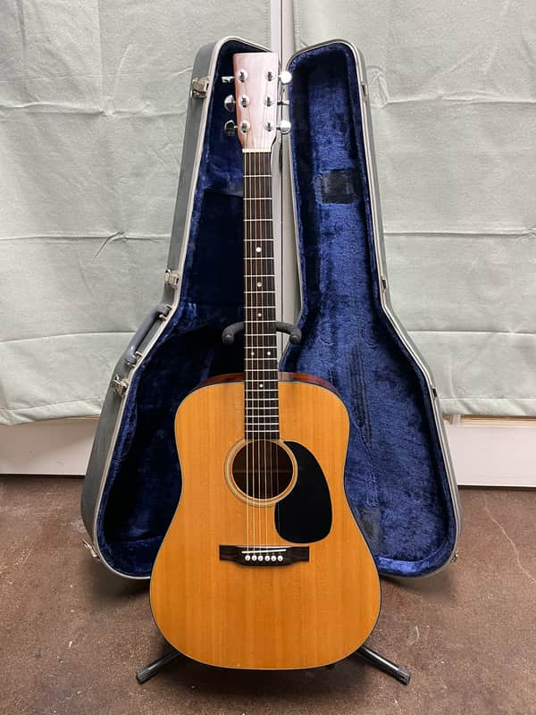
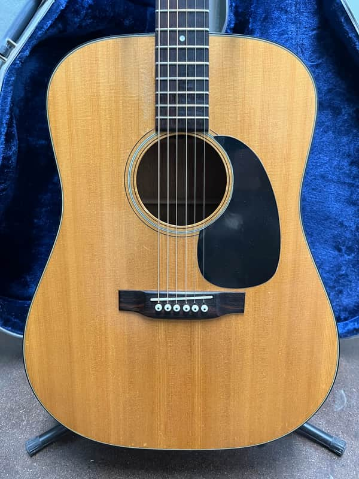
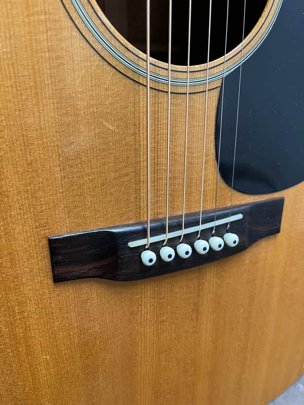
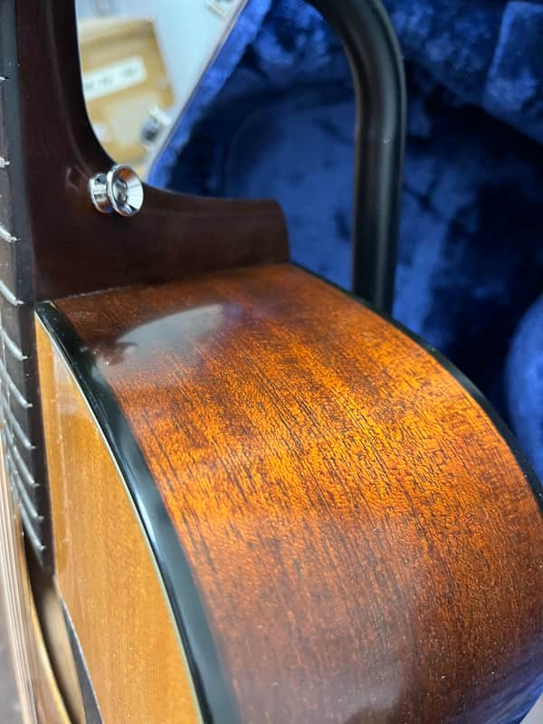
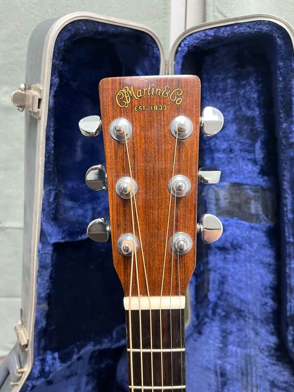
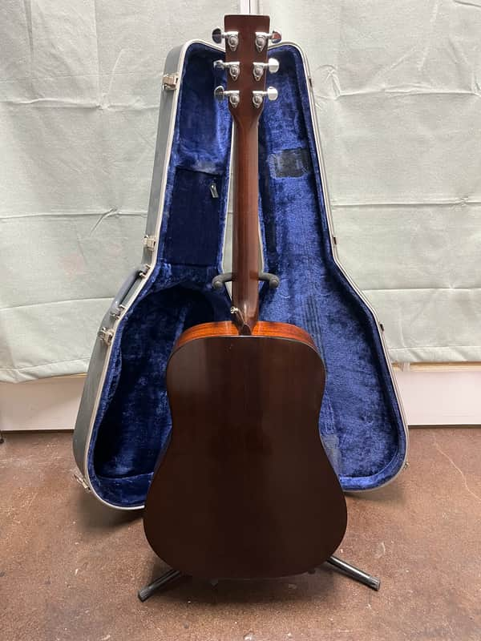
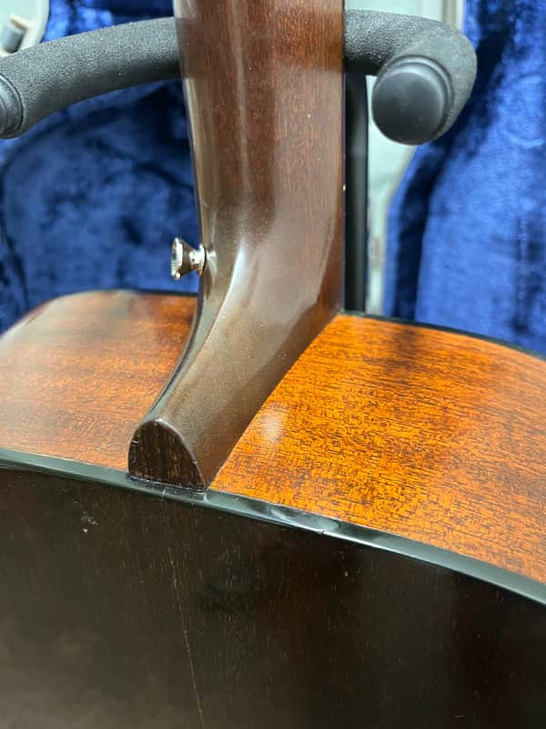
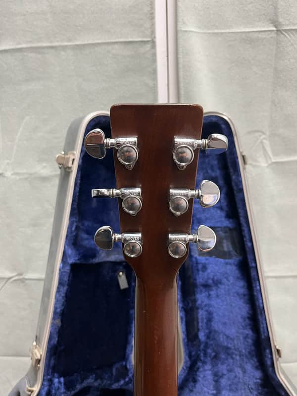
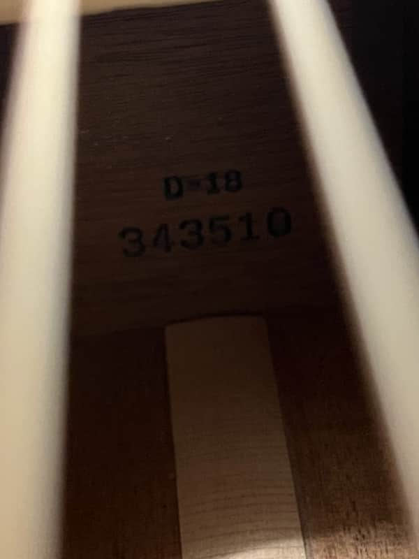

A simple and pretty D-18. This one plays very nicely and has had a neck reset, refret, bone nut and saddle and Waverly bridge pins. There is some wear and chipping around the bass side of the fingerboard extension and the typical scuffs and scratches seen in the pictures. A great guitar with years of play ahead of it. Original case.








